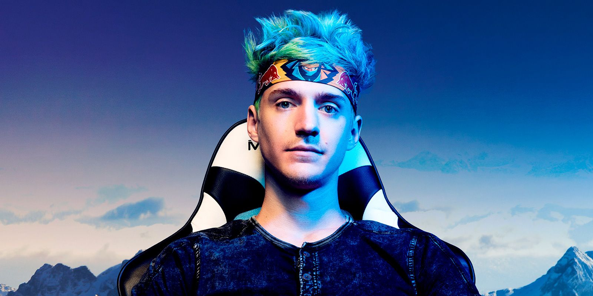
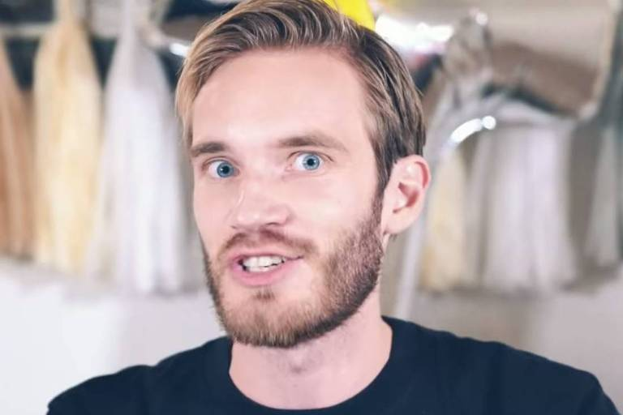

Quando falamos sobre melhores gamers , estamos falando em geral,
aqui veremos não somente os melhores e sim pelo seu alto desempenho de
acordo com as suas especialidades em jogos que exige profissionalismo
por issovamos por etapas, espero que gostem bastante do conteudo

Ninja começou sua carreira como jogador profissional de Halo, participando de competições de eSports.
Depois migrou para o streaming e ganhou enorme popularidade jogando Fortnite, especialmente a partir de 2017.
Ele se tornou um dos primeiros gamers a atingir fama mundial, participando de programas de TV e jogando ao lado de celebridades como Drake.
Também fechou contratos milionários com plataformas como Mixer e Twitch.
Hoje, Ninja é considerado um dos maiores e mais influentes streamers da história dos games. 🎮🔥

PewDiePie começou no YouTube em 2010, gravando vídeos de gameplay, principalmente de jogos de terror e independentes.C:\Users\ED7 Hardware\Downloads\PROJETOS\PROJETO SOBRE JOGOS
Seu jeito espontâneo e bem-humorado fez o canal crescer rapidamente.
Ele se tornou o criador individual com mais inscritos do mundo por vários anos, marcando a história da plataforma.
Além de games, passou a produzir vídeos de memes, reações e comentários sobre a internet.
Hoje, é considerado um dos maiores e mais influentes criadores de conteúdo da história do YouTube. 🎥🔥

Ibai começou como narrador (caster) de campeonatos de League of Legends na Espanha
Seu carisma e humor fizeram ele crescer rapidamente na internet.
Depois, passou a fazer lives na Twitch com jogos, entrevistas e eventos próprios.
Ele ficou ainda mais famoso ao organizar grandes eventos online
como torneios e lutas de boxe entre influenciadores.
Hoje, Ibai é um dos maiores streamers da Europa e uma das figuras mais influentes da internet em língua espanhola. 🌍🎮